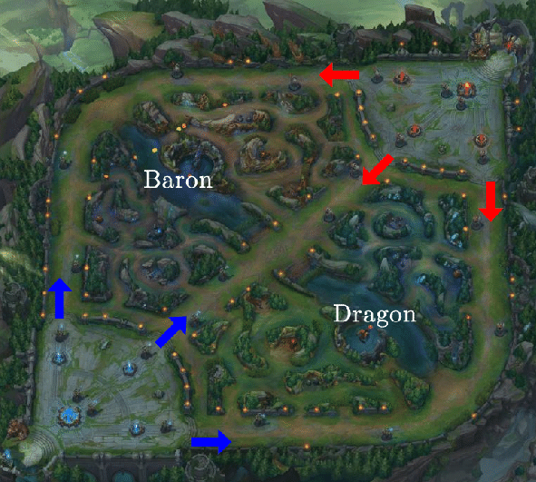

A játékos regisztráció után az úgynevezett láthatatlan "Idéző" szerepébe bújik, aki egy egyedülálló mágikus képességekkel rendelkező hőst tud irányítani akinek célja, hogy csapattársai segítségével legyőzze az ellenfél csapatot. A három különböző pályán a játékosok két egyenlő, 3 illetve 5 fős csapatokra oszlanak, mindenki egy általa vagy véletlenszerűen választott hőst irányítva. A csapatok a térkép két átellenes pontján kezdenek egy Érkező Medence (Spawn Pool) nevű helyen, a Nexus (főközpont, szó szerint: összeköttetés) mellett. Az ellenfél Nexusának elpusztításával lehet megnyerni a játékot, vagy ha az ellenfél csapata feladja.
